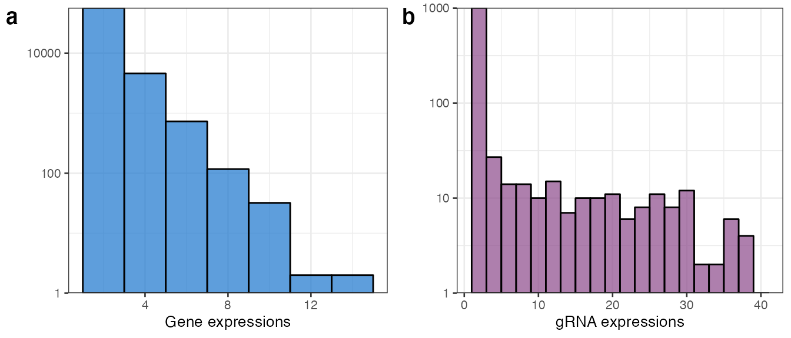

sceptre tutorialusing_sceptre.RmdUpdated March 2022
This vignette illustrates application of sceptre to an
example high-multiplicity-of-infection (MOI) single-cell CRISPR screen
dataset. We begin by installing and loading all required packages,
including the up-to-date version of sceptre.
install.packages("devtools")
devtools::install_github("katsevich-lab/sceptre")
install.packages("tidyverse")
install.packages("cowplot")The first step is to prepare the data for sceptre. We
must prepare three separate data objects: the gene-by-cell expression
matrix, the gRNA-by-cell expression matrix, and the cell-specific matrix
of covariates.
We load the example gene-by-cell and gRNA-by-cell expression matrices
that are included in the sceptre package.
Briefly, gene_matrix (respectively,
gRNA_matrix) is a 5 x 106,660 (respectively, 50 x 106,660)
matrix of gene (respectively, gRNA) unique molecular identifier (UMI)
counts. The data are taken from the paper “Global analysis of enhancer
targets reveals convergent enhancer-driven regulatory modules” by Xie et
al., 2019. The authors of this study used a CRISPRi-based assay to
target putative enhancers in a population of K562 cells. Both genes and
gRNAs are downsampled to reduce the size of the data. One can use the
commands ?gene_matrix and ?gRNA_matrix to read
more about these data.
The row names of gene_matrix and
gRNA_matrix are the gene IDs and gRNA IDs, respectively.
The column names, meanwhile, are the cell barcodes.
# row names
row.names(gene_matrix)
#> [1] "ENSG00000105819.13" "ENSG00000123405.13" "ENSG00000279070.2"
#> [4] "ENSG00000166582.9" "ENSG00000106404.13"
row.names(gRNA_matrix) %>% head()
#> [1] "AGAAGAGTCAGCCTTGCAC" "GAAGAGTCAGCCTTGCACT" "GTTTAGGGAACCCAGTGCA"
#> [4] "GTAACTTCATTTGCAGCAA" "TTACTTTTTATCAAGCCAA" "TCTAATTTAAGACCTGGGT"
# column names
colnames(gene_matrix) %>% head()
#> [1] "AAACCTGAGAGGTACC_4_1" "AAACCTGAGGAATTAC_4_1" "AAACCTGCAATGTAAG_4_1"
#> [4] "AAACCTGCACAGACTT_4_1" "AAACCTGCACGAAGCA_4_1" "AAACCTGCAGGCTGAA_4_1"
colnames(gRNA_matrix) %>% head()
#> [1] "AAACCTGAGAGGTACC_4_1" "AAACCTGAGGAATTAC_4_1" "AAACCTGCAATGTAAG_4_1"
#> [4] "AAACCTGCACAGACTT_4_1" "AAACCTGCACGAAGCA_4_1" "AAACCTGCAGGCTGAA_4_1"To get a better feel for the data, we plot a histogram of the expressions of an arbitrarily selected gene (“ENSG00000105819.13”) and gRNA (“AGAAGAGTCAGCCTTGCAC”).
example_gene <- gene_matrix["ENSG00000105819.13",]
example_gRNA <- gRNA_matrix["AGAAGAGTCAGCCTTGCAC",]
hist_gene <- ggplot(data = example_gene %>% tibble(count = .) %>% filter(count >= 1, count <= 15), mapping = aes(x = count)) +
geom_histogram(binwidth = 2, col = "black", fill = "dodgerblue3", alpha = 0.7) +
scale_y_continuous(trans='log10', expand = c(0, NA)) + xlab("Gene expressions") + ylab("") + theme_bw(base_size = 10)
hist_gRNA <- ggplot(data = example_gRNA %>% tibble(count = .) %>% filter(count >= 1, count <= 40), mapping = aes(x = count)) +
geom_histogram(binwidth = 2, col = "black", fill = "orchid4", alpha = 0.7) +
scale_y_continuous(trans='log10', expand = c(0, NA)) + xlab("gRNA expressions") + ylab("") + theme_bw(base_size = 10)
plot_grid(hist_gene, hist_gRNA, labels = c("a", "b"))
As expected, the data are highly discrete counts. Note that we do not normalize either the gene or gRNA expression matrices, opting instead to work directly with the raw counts.
Next, we load the cell-wise covariate matrix,
covariate_matrix.
data(covariate_matrix)
head(covariate_matrix)
#> lg_gene_lib_size lg_gRNA_lib_size batch p_mito
#> AAACCTGAGAGGTACC_4_1 7.928406 5.609472 batch_4 0.04828829
#> AAACCTGAGGAATTAC_4_1 9.235131 5.433722 batch_4 0.02087601
#> AAACCTGCAATGTAAG_4_1 9.658482 5.831882 batch_4 0.03334611
#> AAACCTGCACAGACTT_4_1 8.593599 5.075174 batch_4 0.06058922
#> AAACCTGCACGAAGCA_4_1 9.255983 6.049733 batch_4 0.02550874
#> AAACCTGCAGGCTGAA_4_1 8.907477 5.733341 batch_4 0.03858129covariate_matrix is a 106,660 x 4 data frame of
“technical factors,” or covariates. The row names of this data frame are
the cell barcodes. The covariates are as follows:
Log-transformed gene library size
(lg_gene_lib_size), which can be computed via
log(colSums(gene_matrix))
Log-transformed gRNA library size
(lg_gRNA_lib_size), which can be computed via
log(colSums(gRNA_matrix))
Sequencing batch (batch)
Percentage of gene transcripts that map to mitochondrial genes
(p_mito)
We strongly recommend that users include the same four covariates
(i.e., lg_gene_lib_size, lg_gRNA_lib_size,
batch, and p_mito) in their own cell-wise
covariate matrix.
The second step — which is optional — is to group together gRNAs that
target the same chromosomal site. To this end we load
site_table, a data frame that maps each gRNA to its target
site. The columns of site_table are site and
gRNA_id. An examination of site_table reveals
that the 50 gRNAs in the example data target five distinct chromosomal
sites, each a putative enhancer.
data(site_table)
head(site_table)
#> site gRNA_id
#> 1 chr10:17457016-17457416 AGAAGAGTCAGCCTTGCAC
#> 2 chr10:17457016-17457416 GAAGAGTCAGCCTTGCACT
#> 3 chr10:17457016-17457416 GTTTAGGGAACCCAGTGCA
#> 4 chr10:17457016-17457416 GTAACTTCATTTGCAGCAA
#> 5 chr10:17457016-17457416 TTACTTTTTATCAAGCCAA
#> 6 chr10:17457016-17457416 TCTAATTTAAGACCTGGGT
length(unique(site_table$site))
#> [1] 5The helper function combine_gRNAs takes as arguments a
gRNA_matrix and a site_table and collapses
gRNAs that target the same site into a single “combined” gRNA via
addition of the constituent expression levels, returning a transformed
gRNA_matrix.
gRNA_matrix <- combine_gRNAs(gRNA_matrix, site_table)
row.names(gRNA_matrix)
#> [1] "chr10:17457016-17457416" "chr18:48566684-48567084"
#> [3] "chr18:48676744-48677144" "chr18:57820043-57820443"
#> [5] "chr8:128428069-128428469"The updated matrix has five rows; the names of these rows are the names of the target sites. The column names (i.e., the cell barcodes) remain unchanged.
row.names(gRNA_matrix)
#> [1] "chr10:17457016-17457416" "chr18:48566684-48567084"
#> [3] "chr18:48676744-48677144" "chr18:57820043-57820443"
#> [5] "chr8:128428069-128428469"
colnames(gRNA_matrix) %>% head()
#> [1] "AAACCTGAGAGGTACC_4_1" "AAACCTGAGGAATTAC_4_1" "AAACCTGCAATGTAAG_4_1"
#> [4] "AAACCTGCACAGACTT_4_1" "AAACCTGCACGAAGCA_4_1" "AAACCTGCAGGCTGAA_4_1"The third step is to determine which gene-gRNA pairs to analyze. It
is common to analyze pairs of genes and gRNAs that are in close physical
proximity to uncover cis-regulatory relationships. For
simplicity, in this tutorial, we analyze a set of 23 randomly-selected
gene-gRNA pairs, stored in the data frame
gene_gRNA_pairs.
data(gene_gRNA_pairs)
head(gene_gRNA_pairs)
#> gene_id gRNA_id
#> 1 ENSG00000279070.2 chr18:57820043-57820443
#> 2 ENSG00000105819.13 chr18:48566684-48567084
#> 3 ENSG00000166582.9 chr18:48676744-48677144
#> 4 ENSG00000106404.13 chr8:128428069-128428469
#> 5 ENSG00000123405.13 chr8:128428069-128428469
#> 6 ENSG00000106404.13 chr18:57820043-57820443The gene_gRNA_pairs data frame contains two columns:
gene_id and gRNA_id. The gene IDs
(respectively, gRNA IDs) in gene_gRNA_pairs must be a
subset of the gene IDs (respectively, gRNA IDs) of
gene_matrix (respectively, gRNA_matrix). Note
that the gRNAs in gRNA_gene_pairs can either be “combined”
or “uncombined,” depending on whether the rows of
gRNA_matrix have been collapsed. In this tutorial
gRNA_gene_pairs consists of “combined” gRNAs.
The fourth step is to determine the sideness of the statistical test. If we are testing for an increase (respectively, decrease) in gene expression, then we should use a right-sided (respectively, left-sided) test. Whether we seek to test for an increase or decrease in gene expression depends both on the genomic element being targeted and on the CRISPR modality being used. For example, if we use CRISPRi to target an up-regulatory element (e.g., an enhancer or a transcription start site), then should test for a decrease in expression and therefore use a left-sided test. The following table summarizes whether a left- or right-tailed test is appropriate given the target element and CRISPR modality. We can see from the first row of the table that a left-tailed test is best for the example data.
| Target element | CRISPR modality | Testing for… | Sidedness |
|---|---|---|---|
| Enhancer or TSS | CRISPRi or CRISPRko | Decrease in expression | Left |
| Silencer | CRISPRi or CRISPRko | Increase in expression | Right |
| Enhancer or TSS | CRISPRa | Increase in expression | Right |
| Silencer | CRISPRa | Decrease in expression | Left |
It also is possible to test for an increase or decrease in
gene expression, in which case one should use a two-tailed test; see
?run_sceptre_high_moi (discussed below) for details.
The final step is to call the function
run_sceptre_high_moi on the data. The most important
arguments to this function are gene_matrix,
gRNA_matrix, covariate_matrix,
gene_gRNA_pairs, and side, all of which we
prepared above. run_sceptre_high_moi has several
additional, optional arguments, which are set to reasonable defaults.
One can read more about run_sceptre_high_moi by checking
the documentation (?run_sceptre_high_moi). The function
takes about 40 second to run on the example data on an 8-core Macbook
Pro.
result <- run_sceptre_high_moi(gene_matrix = gene_matrix,
gRNA_matrix = gRNA_matrix,
covariate_matrix = covariate_matrix,
gene_gRNA_pairs = gene_gRNA_pairs,
side = "left")The output is a data frame called result with columns
gene_id, gRNA_id, p_value, and
z_value. The first three columns have clear meanings; the
final column, z_value, is the z-value of a negative
binomial GLM fitted to the data. Positive z-values indicate increased
expression, whereas negative z-values indicate decreased expression.
Finally, we apply the Benjamini-Hochberg procedure to the
p-values to correct for multiple testing.
And with that we have completed our analysis!
Optionally, gRNA_matrix can be a binary matrix of
perturbation presence/absence indicators, where the user has assigned
perturbation indicators to cells by, for example, thresholding the raw
gRNA count matrix.
The function plot_result (documented in
?plot_result) creates an informative plot of the
output.